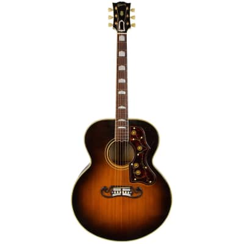
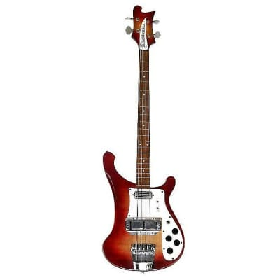

Gibson SJ 200
Gibson SJ-200s are Gibson acoustic guitars known for their “moustache” bridge and flowery pickguard.

1968 Rosewood Telecaster
Custom built by Roger Rossmeisl for George Harrison. The creation of the guitar likely stemmed from Fender’s ambition to place their products with the most popular band in the world.

1968 Rickenbacker 40001S Bass
A hollow electric violin-shaped bass created by Hofner and popularized by Paul McCartney of the Beatles.

1967 Ludwig Hollywood Kit
Offered more range and variety than the average Ludwig kit.

Moog Synthesizer
Early form of the traditional synthesizer created by Robert Moog in the mid 1960s.